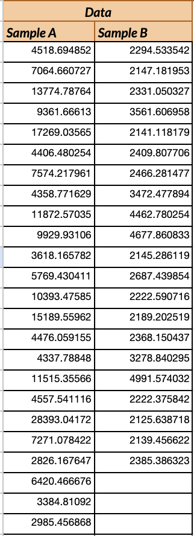

In this project, I was trying to devise ways of testing whether a specific feauture significantly affected a user metrics while using a website. Using the power of statistics I delved into creating two versions of the same website. For the purpose of this write up I will consider version A as the control and version B the changed version. With these tests we are trying to prove if the website usage is effective and if it can be improved with a change in the UI. A/B Testing is useful at letting us know if a change is effective by comparing a changed version with a control one, which after we gather the data I can then analyze using t-tests and chi squared tests.
I was unable to attend the studio the week it was due so I am using Version B data given by the TAs which has a modification that I am not completely aware of.
The metrics that I am tracking in this project are (1)the misclick rate meausred by the frequency with which users click something else on the page before finding the correct button for the task, (2) time on page measured by time spent on the webpage for each user group and (3) mouse movement measured by the total movement distance of the cursor. I choose the third metric to test how much a user needs to move the mouse across the website, thinking that the less a user moved the cursor the more straigforward it is to finalize an action.
Null hypothesis: The amount of times users click on something else on the page before finding the correct button for the time in Version A is the same as in Version B. Alternative hypothesis: The amount of times users click on something else on the page before finding the correct button for the time in Version A is more than in Version B. The alternative hypothesis expects there to be a smaller number of misclicks in Version B than in Version A. I constructed this as such because Version B was attempting to improve the ease of navigation in the website. That is, people would need to unnecessarily click around more in Version A. My prediction is that I will end up rejecting the null hypothesis as there has been a change in the way the website is designed and its made to make it so that every click is intentional and the website has affordances when it comes to clicking.
Null hypothesis: The amount of time spent on the webpage for each user group is the same in Version A as in Version B. Alternative hypothesis: The amount of time spent on the web page for each user group is less in Version A than in Version B. The alternative hypothesis expects users to spend less time in Version B than Version A. Since Version B is supposed to be an improvement in the website navigation, then I expected users to execute their actions quicker in the edited version. I predict that I will reject the null hypothesis and that the change in the website will make the time spent in it be more efficent for users, which is the alternative hypothesis.
Null hypothesis: The amount of mouse movement on the web page for each user group is the same in Version A as in Version B. Alternative hypothesis: The amount of mouse movement on the web page for each user group is more in Version A than in Version B. The alternative hypothesis expects users to drag the mouse across the screen for longer distances in version A than in Version B. I constructed the alternative hypotheiss this way because I thought that Version B is supposed to create a more efficent user experience, meaning that a user would have a clearer idea of where to drag the cursor. I predict that the null hypothesis will be rejected and we will be able to confidently say that version B results in smaller mouse movement distances .
In order to test my hypotheses for the misclick rate I first looked at what the metric I was using was. I was looking at the frequency in which users of different groups would click the wrong button. In this case the data is categorical since a user can either misclick or not, and we are aggregating the data of many users across two different versions of the same website. I decided to run a chi-squared test because we were trying to find a categorical difference between the frequency of two groups. The way the test was conducted was to aggregate the number of people that misclicked in each version and the number of people that did not misclick. Using this as our input I ran the chi-squared test and found the following: Looking at the result of the test I can interpret the values as follows, the degrees of freedom is 1 which only tells us that I used 2 rows and 2 columns of data. The more interesting values are the chi-squared and p-value. The p value of ~0.011 tells us that there is around a 1% chance that both groups are actually the same. Using a standard alpha value of 0.05, 0.011 < alpha meaning that I reject the null hypothesis and instead I are confident that the alternative hypothesis is true. The chi-square value of 6.42 tells us that the difference in frequency of users that misclicked is around 6 users in the sample which is a significant number as the sample size was in the low twenties. In conclusion, the chi-square test which examines homegeneity leads us to believe that Version B has a different frequency of misclicks which we assume is lower than Version A by the alternative hypothesis.
To test my hypotheses for the time spent on each page, I started by analyzing the metric that was being measured. Since we had the data of how much time each user of each group had spent on each site, I knew I could conduct a t-test as it looks at quantitative data across two different sample groups. Additionally, I decided to conduct a one-tailed t-test because my alternative hypothesis expected that version B would have a smaller time spent on the webpage. To do this, I inputted the data collected in both samples (Note:Sample A contains Version be data and vice versa). Using this as our input data I ran a one-tailed t-test and found the following: Looking at the results of the test we learn multiple things. The most important metric for our hypotheses is the p-value which in this case is so close to zero (and less than 0.05), which means that there is statistically signifcant difference between samples A and B. Thus, we reject the null hypothesis and are confident that users spend more time on version B than on version A. If we keep looking at the data we can see how it supports this conclusion. Firstly looking at the averages we see that users spent an average of 36 seconds on version A and an average of 9 seconds of version B which shows the direction of the difference is along the lines of the alternative hypothesis. Looking at the variances we can tell that spread of version A is a lot higher than that of version B, which suggests that the experience on the page was more standard for version B users across the board. The degrees of freedom of 25 and the t-value of ~-8 are used to calculate the p-value but they basically highlight the sample size of the data tracked and the difference in magnitude, respectively. In conlcusion, it is safe to say that users spent more time on version A than on version B.
In order to test what the difference in mouse movement between versions was, I looked at the metric being measured. Having a quantitative measurement such as pixels dragged by user in two samples, I knew I had to conduct a one-tailed t-test just as in the previous test. Since the alternative hypothesis expected Version B to have lower mouse movement, I thought it would be the right test to conduct. So I started by inputting the sample data.  With this as the input data I proceeded to run a one-tailed t-test and the following were my findings: The results show that the p-value that A is less than B, however, since we are looking at the opposite fact, we have to substract the p-value from 1. The result is very close to zero and definitely less than 0.05, our standard alpha. This means that we reject our null hypothesis and can confidently say that we found evidence that the alternative hypothesis is true. Looking at the other data points we see that the average of the sample of version A is more than 3-fold that of version B which further proves that this change in UI, helped decrease the amount of distance that users move their mouse. We also see that the variance is 10 times bigger for version B than for version A. From that I am assuming that the experience is less standard across the board, and it might not be intuitive for all audiences. It is important to remember that the t-value (magnitude of difference) and the degrees of freedom (based on sample size) were necessary to compute this p-value. Overall, it is safe to say that users move their mouse greater distances in version A than in version B.
Overall, in this project I learned how to use statistical tests in order to determine whether a change in a user's experience/interface significantly changes metrics that can be tracked. We can then use that data to track things that as web desginers are important to us. For example, the three conclusions from the tests were that users in Version B misclicked less, spent less time on the page and moved their mouse less than users in version A. With that I think its safe to claim that version B has made the user experience more compact and made it clearer for users to achieve their personal goals in the website.